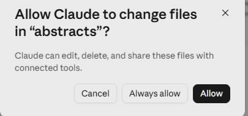
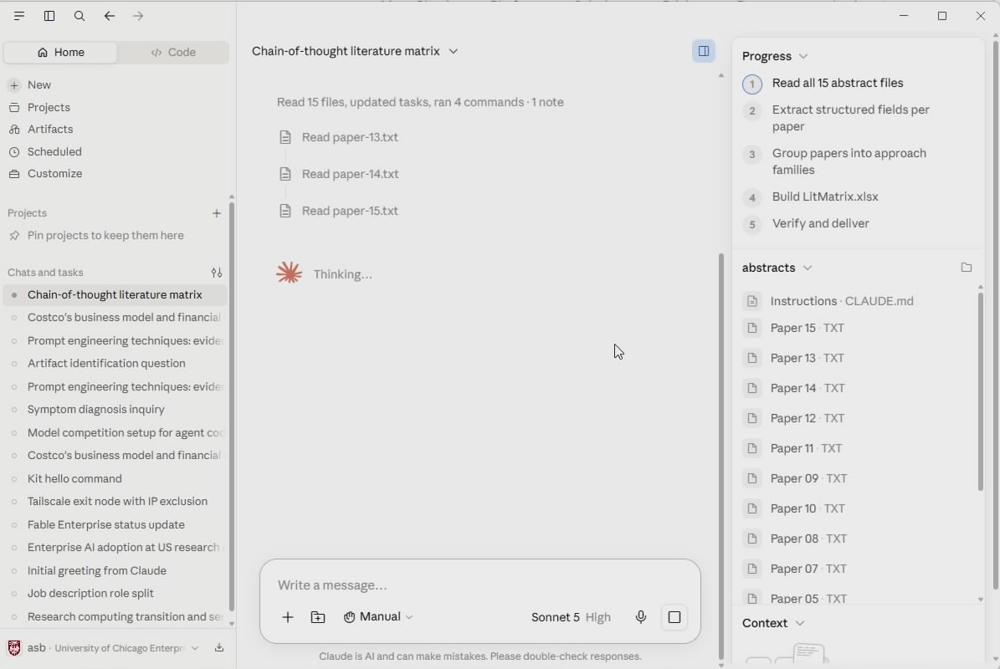
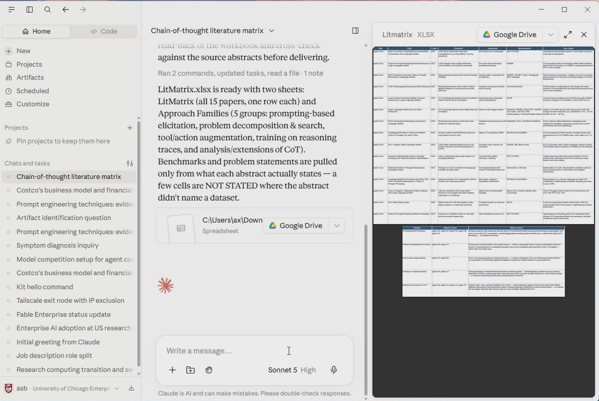

Demo 2 · Cowork
Abstracts to spreadsheet
In 10 minutesFifteen paper abstracts — one slice of the chain-of-thought literature — turned into a screening-ready literature matrix in Excel, by one instruction.
No Cowork next to Chat in the message box? See first time using Cowork below. And the bottom-left should say University of Chicago Enterprise — yes, at TTIC; if not, do Sign in once first.
Download the abstracts (ZIP, 14 KB)
First time using Cowork?
Two things to know, both quick:
- Cowork lives in the message box — a little Chat | Cowork toggle under where you type. If Cowork is greyed out with a note about a "modern installer", your Claude Desktop is an older install: grab the current installer from claude.com/download and run it once (a couple of minutes; Windows will ask to allow the installer — say Yes — and you stay signed in). Cowork lights up after that.
-
Each time you add a folder to a Cowork session, Claude asks to allow changes to files in that folder. That's the deal you're making: it can edit, delete, and share files in that folder — and nowhere else. Click Allow (Always allow stops it asking for that folder).

The ask each time you add a folder. Allow is what makes the demo work.
Your (older) Claude asked for Windows' 'Virtual Machine Platform' instead?
Older versions of Cowork asked for a Windows feature called Virtual Machine Platform — approve the prompt, restart once, done. If it sticks: press Start, type windows features, open Turn Windows features on or off, tick Virtual Machine Platform, click OK, restart. If the permission box wants an administrator password you don't have, ask TTIC IT to enable it for you. Or skip all of it — install the current version from claude.com/download, which doesn't need any of this.
Steps
- Download the ZIP, then in your Downloads folder right-click → Extract All… → Extract. You'll get an
abstractsfolder with 15 text files, right next to the ZIP. (Double-clicking the ZIP looks like a folder of files, but it isn't one — Cowork can't use it. Extract first.) - In Claude Desktop, click New, then click Cowork in the message box (right next to Chat).
- Click Project or folder just below the box, pick Add a folder, and choose Downloads → abstracts. When Claude asks to allow changes to files in "abstracts", click Allow.
-
Paste this and hit Enter:
This folder contains 15 text files, each the title, authors, year, and abstract of one research paper on chain-of-thought reasoning. Read every file and build an Excel file called LitMatrix.xlsx with one row per paper: File, Title, Year, Problem, Approach, Benchmarks, Key claim. Keep Approach to five words or fewer, and under Benchmarks list only datasets the abstract actually names. If an abstract doesn't state something, put NOT STATED in that cell instead of guessing. Add a second sheet grouping the papers into 3-5 approach families, with one line on what each family does.Now watch. Cowork opens each file, reads it, and builds the matrix. Along the way it may pause to ask a question or for a go-ahead — read what it says and answer in plain English; that is the skill. If it seems to stall partway, type
continue.
Cowork lays out a plan and works the checklist in its Progress panel — read the files, extract the fields, group the families, build the file, verify it — with the folder's files listed alongside.
-
When it finishes, the spreadsheet opens in a preview right next to the chat — and the real
LitMatrix.xlsxis sitting in the folder.
LitMatrix.xlsx previewed beside the chat — one row per paper, plus the second sheet of approach families. In this run, a few abstracts named no benchmark — those Benchmarks cells read NOT STATED instead of a guess.
No Excel on this machine? Go to office.com, sign in with your UChicago account, and upload LitMatrix.xlsx — it opens in Excel for the web.
Yours won't match this cell-for-cell — abstracts are advertisements, and a few of these genuinely don't state what they tested on. That's the point of the next step.
Don't take the first answer — push back
You'd never build a related-work section from abstracts you hadn't questioned. Same here:
Abstracts oversell. For each Key claim, quote the exact sentence it came from, and flag every row where you interpreted rather than read. Then tell me: which three of these papers would you read in full first, and why?
Claude shows its evidence, you make the call, it fixes the sheet. That back-and-forth is the whole job — you own the result, Claude does the typing.
Yes, this is allowed — it's the University of Chicago enterprise workspace. For unpublished data or anything under review, check UChicago's AI guidance first.
Your turn
Any folder of anything → any file you wish existed. The 40 PDFs in your to-read folder → a screening matrix like this one. A semester of meeting notes → an action-item tracker. The reviews on your last submission → a point-by-point response skeleton. Describe the end product, keep the "if it doesn't say, say NOT STATED" guardrail, and let Cowork do the walking — then check its work.
When the task is bigger — real data you'll re-run every month — that's an Automate. Last page.
Next: 3 · Code — kill a recurring data chore
Paper metadata (titles, authors, abstracts) from arXiv.org; each file cites its arXiv ID and link. The papers themselves remain under their authors' licenses.